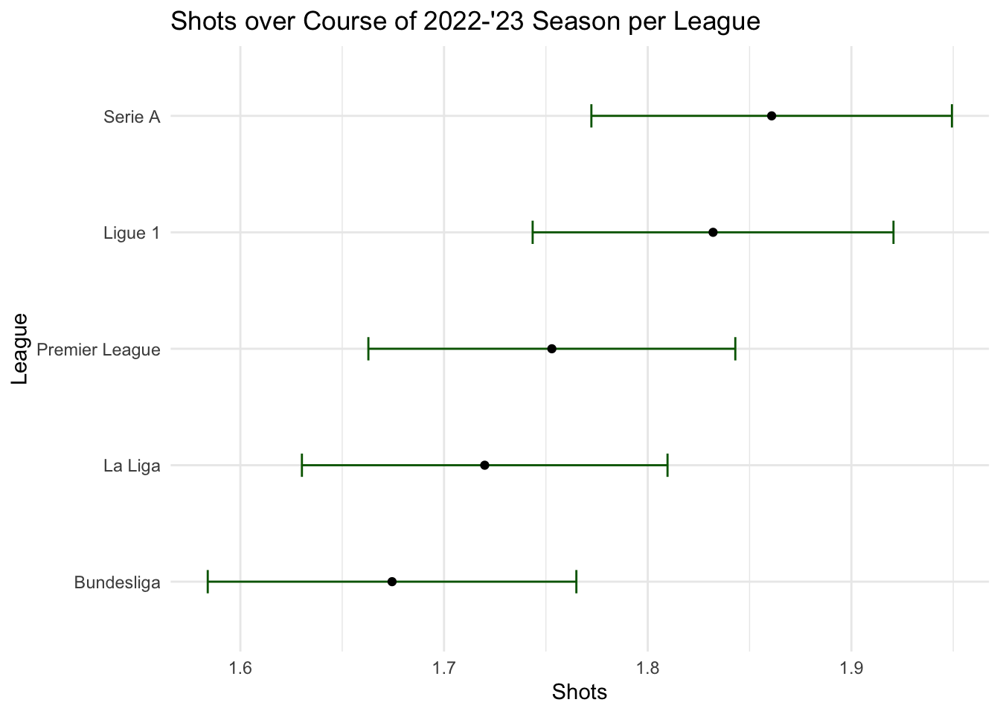
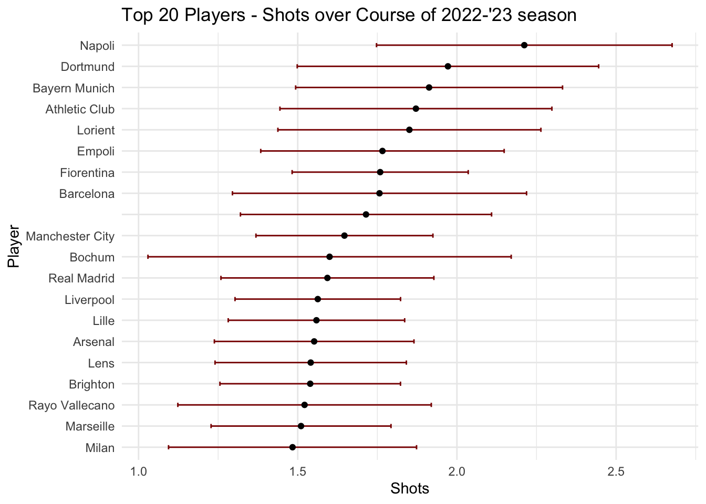

── Attaching core tidyverse packages ──────────────────────── tidyverse 2.0.0 ──
✔ dplyr 1.1.4 ✔ readr 2.1.5
✔ forcats 1.0.0 ✔ stringr 1.5.1
✔ ggplot2 3.5.0 ✔ tibble 3.2.1
✔ lubridate 1.9.3 ✔ tidyr 1.3.1
✔ purrr 1.0.2
── Conflicts ────────────────────────────────────────── tidyverse_conflicts() ──
✖ dplyr::filter() masks stats::filter()
✖ dplyr::lag() masks stats::lag()
ℹ Use the conflicted package (<http://conflicted.r-lib.org/>) to force all conflicts to become errors
Load in Data
soccer <-read_delim(here::here("posts/Pro Soccer Players 2022-2023/2022-2023 Football Player Stats.csv"), delim=";")
Rows: 2689 Columns: 124
── Column specification ────────────────────────────────────────────────────────
Delimiter: ";"
chr (5): Player, Nation, Pos, Squad, Comp
dbl (119): Rk, Age, Born, MP, Starts, Min, 90s, Goals, Shots, SoT, SoT%, G/S...
ℹ Use `spec()` to retrieve the full column specification for this data.
ℹ Specify the column types or set `show_col_types = FALSE` to quiet this message.
Introduction
This is a project to analyze the 2022-2023 season of the top 5 European soccer leagues. We will be using data from the following leagues:
English Premier League (England)
Ligue 1 (France)
Bundesliga (Germany)
Serie A (Italy)
La Liga (Spain)
The dataset was obtained from Kaggle and contains player statistics for the 2022-2023 season. Each observation is a player and the columns contain various statistics such as goals, assists, and minutes played. There are 2,689 total observations and 124 variables. The dataset can be found here.
Spread of goals is fairly even across the top 5 leagues.
Shots for Leagues
We want to look at the average number of shots per game across the top 5 leagues. We will filter the data to only include forwards, midfielders, and players who play both positions. We will then group the data by league and calculate the mean number of shots per game. We will also calculate the standard deviation and standard error of the mean. We will then plot the data using ggplot2.
soccer %>%# filtering out the goalisfilter(Pos %in%c("FW", "MF", "MFFW", "FWMF", "FWDF", "DFFW")) %>%# filter for field/offensive playersgroup_by(Comp) %>%summarize(mean_shots =mean(Shots, na.rm =TRUE),sd_shots =sd(Shots, na.rm =TRUE),n_players =n()) %>%mutate(se_shots = (sd_shots /sqrt(n_players)),lb_se = mean_shots - se_shots,ub_se = mean_shots + se_shots) %>%mutate(Comp =fct_reorder(Comp, mean_shots)) %>%# Reverse the order of the levels of the factorggplot(aes(x = Comp, y = mean_shots)) +geom_errorbar(aes(ymin = lb_se, ymax = ub_se), width =0.2, color ="darkgreen") +geom_point() +labs(title ="Shots over Course of 2022-'23 Season per League",x ="League",y ="Shots") +theme_minimal() +coord_flip()

Looking at the plot, can conclude that Serie A has the highest average number of shots, followed by Ligue 1, and Bundesliga is in last place. The standard error of the mean is relatively small for each league, indicating that the sample means are likely close to the population mean. The standard deviation is also relatively small for each league, indicating that the data is not very spread out.
Shots for Teams
soccer %>%group_by(Squad) %>%summarize(mean_shots =mean(Shots, na.rm =TRUE),sd_shots =sd(Shots, na.rm =TRUE),n_teams =n()) %>%mutate(se_shots = (sd_shots /sqrt(n_teams)),lb_se = mean_shots - se_shots,ub_se = mean_shots + se_shots) %>%arrange(desc(mean_shots)) %>%# Sort by mean_shots in descending orderhead(20) %>%# Select the top 20 playersmutate(Squad =fct_reorder(Squad, mean_shots)) %>%# Reverse the order of the levels of the factorggplot(aes(x = Squad, y = mean_shots)) +geom_errorbar(aes(ymin = lb_se, ymax = ub_se), width =0.2, color ="darkred") +geom_point() +labs(title ="Top 20 Players - Shots over Course of 2022-'23 season",x ="Player",y ="Shots") +theme_minimal() +coord_flip()

This plot is showing the top 20 teams with the highest average number of shots. Shows Napoli have the highest average of shots per game, where the league Serie A does tend to be high scoring, followed by Dortmund of Bundesliga. In last place We have Milan, which is surprising as they are a top team in Serie A. The standard error is relatively large for Bochum, which means that there must be a single player on the team or a select few scorers.
Conclusion
In conclusion, we have analyzed the 2022-2023 season of the top 5 European soccer leagues. We found that the spread of goals is fairly even across the top 5 leagues. We also found that Serie A has the highest average number of shots, followed by Ligue 1, and Bundesliga is in last place. We also found that Napoli has the highest average of shots per game, followed by Dortmund, and Milan is in last place. We used standard error bars to show the spread of the data and to show the uncertainty of the mean. We also used standard deviation to show the spread of the data. We hope to continue this analysis in the future and to look at other statistics such as assists and minutes played.